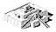

Outer shell
The mud-brick core of the ziggurat was covered with baked bricks. Each baked brick measured about 30 x 30 x 7 cm and weighed up to 15 kg. About 720,000 baked bricks would have been needed in building the first stage of the ziggurat.
This brick was stamped with the name and title of Ur-Nammu, the king who ordered the ziggurat built. Most bricks used to build the ziggurat were stamped. Somebody had the job of stamping the damp bricks. |